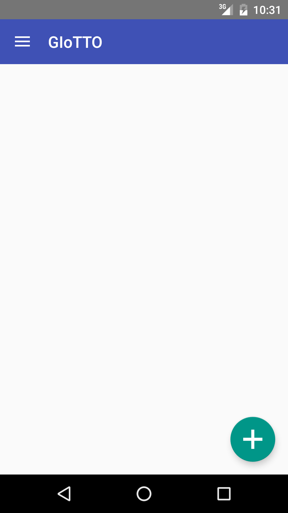

Quick Start¶
Try it with Dummy Sensor Scripts¶
Setup Demo Scripts¶
- Setup Building Depot with its demo database and the machine learning layer module.
- Copy demo_script folder to the server you installed them.
- Update parameters in giotto_setting.json to match your server settings.
Setup Android App¶
- Build and install the ML Client for Android on an Android phone.
- Click the hamburger icon at the top left corner.
- Change the address parameter in ML Settings and BuildingDepot Settings to match your server settings. You can leave other settings as default.
Try Android App¶
Now, let’s try the machine learning part. In this process, we will create a virtual sensor that tells whether a sensor is being shaken or not.
In the demo_script folder, we have two scripts:
dummy_still.py and dummy_shaken.py.
These scripts emulate 15 sensor outputs from a SensorTag.
dummy_still.py emulates the outputs when a SensorTag is placed still,
and dummy_shaken.py emulates the outputs when a SensorTag is being shaken.
First, create a virtual sensor by tapping the + button in the main screen. Type a sensor name and tap Save.
{kind=link}
{kind=link}
Open the virtual sensor by tapping in in the main screen, then, tap the teacher icon to move to the training screen.
{kind=link}

Add statuses, which are potential output from a virtual sensor. (Essentially, they are labels.) Tap the + button, type Shaken, and tap OK. Again, tap the + button, type Still, and tap OK.
{kind=link}
Execute dummy_shaken.py to emulate a situation where a SensorTag is being shaken.
$ python dummy_shaken.py
Tap the recode icon next to Shaken to start adding a sample. Wait for a few seconds and tap Finish. Repeat this for 5 times.
{kind=link}
Then, stop the dummy_shaken.py with Ctrl+C.
Execute dummy_still.py to emulate a situation where a SensorTag is placed still.
$ python dummy_still.py
Tap the recode icon next to Still to start adding a sample. Wait for a few seconds and tap Finish. Repeat this for 5 times.
Tap the menu icon at the top right corner, and tap Train. A classifier in the virtual sensor is trained with the training samples that you provided.
{kind=link}
Tap the menu icon again and tap Test.
A prediction should appear at the bottom of your screen.
(It should say Still because dummy_still.py is still running.)
Stop dummy_still.py with Ctrl+C.
Execute dummy_shaken.py and tap Test again.
You should see Shaken as a prediction.
Try it with a SensorTag¶
If you have a SensorTag, you can replace the dummy scripts with it. Follow the instruction. Then, create another virtual sensor with actually shaking the SensorTag.